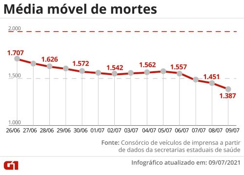
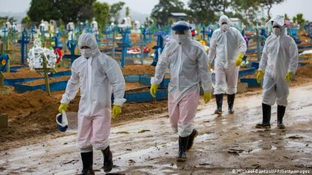

Últimas notícias sobre o coronavírus no Brasil e no Mundo
No Brasil:
Casos confirmados
Óbitos confirmados
Brasil registra 531 mil mortos por Covid; em queda há 13 dias, média móvel é de 1.387 vítimas diárias.
País contabiliza 531.777 óbitos e 19.019.974 casos, segundo balanço do consórcio de veículos de imprensa com dados das secretarias de Saúde. Média móvel de casos é a menor desde fevereiro.

O Brasil registrou 1.433 mortes por Covid-19 nas últimas 24 horas, totalizando nesta sexta-feira (9) 531.777 óbitos desde o início da pandemia. Com isso, a média móvel de mortes nos últimos 7 dias chegou a 1.387 – o menor registro desde o dia 4 de março (quando estava em 1.361). Em comparação à média de 14 dias atrás, a variação foi de -19% e aponta tendência de queda. É o 13º dia seguido de queda nesse comparativo.
Os números estão no novo levantamento do consórcio de veículos de imprensa sobre a situação da pandemia de coronavírus no Brasil, consolidados às 20h desta sexta. O balanço é feito a partir de dados das secretarias estaduais de Saúde.
De 17 de março até 10 de maio, foram 55 dias seguidos com essa média móvel de mortes acima de 2 mil. No pior momento desse período, a média chegou ao recorde de 3.125, no dia 12 de abril.Apenas dois estados apresentam tendência de alta nas mortes: AC e PR.
Em casos confirmados, desde o começo da pandemia, 19.019.974 brasileiros já tiveram ou têm o novo coronavírus, com 57.188 desses confirmados no último dia. A média móvel nos últimos 7 dias foi de 47.656 novos diagnósticos por dia – a mais baixa desde 22 de fevereiro (quando estava em 47.374). Isso representa uma variação de -34% em relação aos casos registrados na média há duas semanas, o que indica tendência de queda também nos diagnósticos.
Em seu pior momento, a curva da média de diagnósticos chegou à marca de 77.295 novos casos diários, no dia 23 de junho.

Brasil, 9 de julho
Estados
Vacinação
Os brasileiros que tomaram a segunda dose ou a dose única de vacinas contra a Covid e estão imunizados são 14,16%. São 29.993.075 de pessoas vacinadas -- 27.839.173 da segunda dose e 2.153.902 da dose única, da Janssen, de acordo com dados do consórcio de veículos de imprensa divulgados às 20h desta sexta-feira (9).
A primeira dose foi aplicada em 82.908.617 pessoas, o que corresponde a 39,15% da população.
Somando a primeira, a segunda e a dose única, são 112.901.692 doses aplicadas no total desde o começo da vacinação, em janeiro.
No Mundo:
Mundo passa de 4 milhões de mortes por Covid, mas número 'subestima o total de vítimas', diz OMS
O último milhão de óbitos foi registrado em tempo recorde: apenas 81 dias. Brasil passou a Índia de novo e é o país que tem a maior média de novas vítimas do novo coronavírus.
O mundo passou de 4 milhões de mortes causadas pela Covid-19, mas o número "subestima o total de vítimas", afirmou nesta quarta-feira (7) o diretor-geral da Organização Mundial da Saúde (OMS), Tedros Adhanom.
A marca é superada com o Brasil de novo como o país que tem a maior média diária de novas vítimas do coronavírus do planeta.
Foram 263 dias para a pandemia chegar ao 1º milhão de vítimas, mais 108 dias para o 2º milhão, outros 93 dias para o 3º milhão e apenas 81 dias para ultrapassar a marca atual.
"O mundo está em um ponto perigoso nesta pandemia. Acabamos de ultrapassar a trágica marca de 4 milhões de mortes registradas de Covid-19, o que provavelmente subestima o número total de vítimas", afirmou Tedros.
Apesar da declaração, o painel da OMS reporta na manhã desta quarta 3.988.565 mortes causadas pela Covid-19. O monitoramento da Universidade Johns Hopkins aponta 3.995.703 vítimas e o "Our World in Data", projeto ligado à Universidade de Oxford, 3,99 milhões.
Brasil como o pior país
O número de mortes por Covid-19 tem recuado também no Brasil, de uma média de mais de 3,1 mil em meados de abril para cerca de 1,5 mil por dia na última semana, mas o patamar atual ainda é muito alto.
O Brasil é o país que a maior média de óbitos por dia por Covid-19 desde 20 de junho (posto que já havia ocupado entre março e abril deste ano e entre junho e julho do ano passado).
Atualmente, a média diária de vítimas no Brasil é mais do que a de Índia e Rússia juntos (o 2º e 3º países do ranking).
Evolução da pandemia
O primeiro milhão de mortes foi marcado por uma primeira onda na Europa, entre março e abril de 2020, que assustou o mundo e levou os países a adotarem severas medidas de restrição para diminuir a proliferação do vírus.
O segundo milhão de vítimas foi marcado por uma aceleração constante no número de óbitos primeiro na Europa, impulsionada pela variante alfa, detectada inicialmente no Reino Unido, e posteriormente nos Estados Unidos, o que levou o mundo a atingir na época o recorde de mortes diárias.
O terceiro milhão de óbitos foi marcado por uma forte queda no número de mortes tanto nos EUA quanto na Europa, após severas restrições e com a aceleração da vacinação. Ao mesmo tempo, os óbitos já começavam a crescer na América do Sul e na Ásia, a partir de março.
Já o quarto milhão foi marcado por uma disparada da pandemia na América do Sul e na Ásia, sobretudo por causa do Brasil e da Índia.
Variantes gama e delta
Na América do Sul, a variante gama (ou P.1) se espalhou pelo Brasil e depois para os outros países da região, causando uma onda de casos e mortes inclusive em países com a vacinação mais adiantada, como Chile e Uruguai.
Na Ásia, a variante delta devastou a Índia, que passou por um completo colapso sanitário e hospitalar entre abril e maio e bateu todos os recordes mundiais de casos e mortes por Covid-19.
Desde então, a variante delta tem se espalhado pelo mundo e causado uma forte alta de mortes em diversos países — da Rússia à Indonésia — e também de casos até em nações que são referência na vacinação contra a Covid-19, como Israel e Reino Unido.